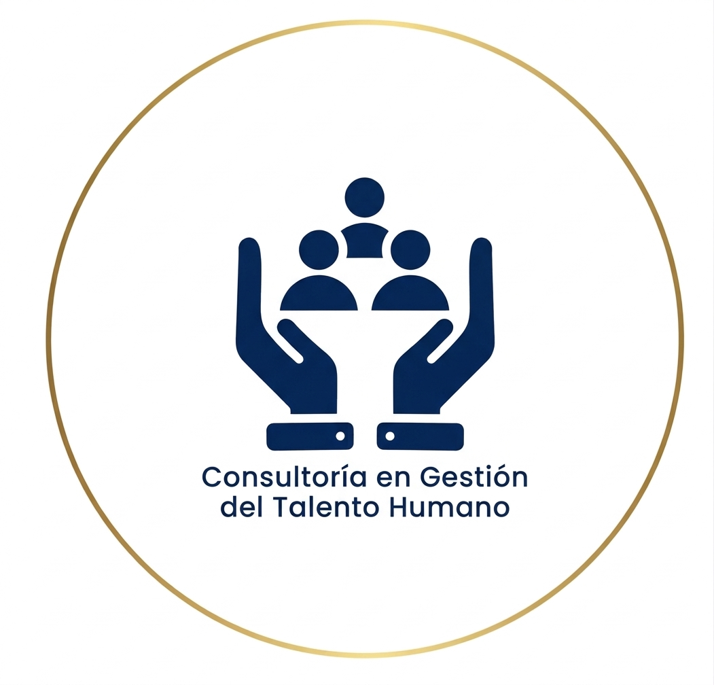
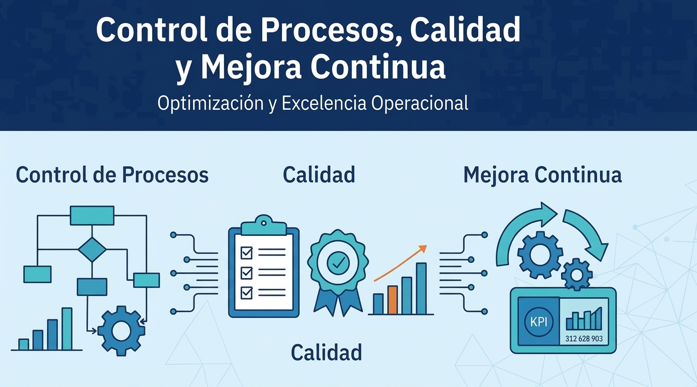

Diagnóstico de gestión humana
Evaluación de prácticas, capacidades y prioridades para construir una hoja de ruta institucional.
Ingeniería industrial · Talento humano
Acompaño a entidades públicas a fortalecer su gestión humana con analítica, procesos eficientes y decisiones centradas en las personas.
Agenda una conversaciónSoluciones a tu medida
Servicios diseñados para convertir los retos de gestión humana en oportunidades de mejora institucional.

Evaluación de prácticas, capacidades y prioridades para construir una hoja de ruta institucional.

Mapeo y mejora de procesos de talento humano para ganar eficiencia, claridad y trazabilidad.
Organización, análisis y visualización de datos para respaldar decisiones de talento humano.
Definición de métricas y tableros de seguimiento conectados con los objetivos de la entidad.
Apoyo metodológico para estructurar perfiles y procesos de selección basados en competencias.
Priorización de iniciativas y acompañamiento para alinear el talento con los resultados institucionales.
Cómo puedo ayudarte
Un enfoque que integra personas, procesos y evidencia para lograr cambios sostenibles.
Asesoría para fortalecer la planeación, el desarrollo y las prácticas de talento humano en entidades públicas.
Transformación de datos en indicadores, informes y hallazgos útiles para orientar decisiones institucionales.
Identificación de oportunidades de mejora y diseño de procesos claros, medibles y centrados en las personas.
Hablemos de tu reto
Cuéntame qué necesita tu entidad y conversemos sobre una solución de gestión humana alineada con sus objetivos.
El formulario muestra una confirmación en esta página, pero no envía el mensaje. Para contactarme directamente, usa WhatsApp o Telegram.